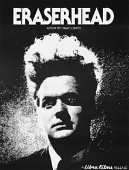

| |
|  | Director: David Lynch | Fecha de estreno: 19 de marzo de 1977 (Estados Unidos) | Género Fantástico. Drama | Cine independiente USA. Cine experimental. Surrealismo. Película de culto | Duración: 90 min. |
| Sinopsis |
Henry Spencer, un joven deprimido y asustadizo, sufre desde pequeño unas extrañas pesadillas de las que intenta liberarse a través de su imaginación. Cuando Henry es invitado a cenar a casa de su amiga Mary, se entera de que ha sido padre de un bebe. |